| No | Variable | Stats / Values | Freqs (% of Valid) | Valid | Missing |
|---|---|---|---|---|---|
| 1 | edad [factor] |
1. 28 a 34 años 2. 35 a 49 años 3. 50 o más años |
\12 (12.2%) \55 (56.1%) \31 (31.6%) |
98 (100.0%) |
0 (0.0%) |
| 2 | grado [factor] |
1. Magíster 2. Doctorado |
\17 (17.3%) \81 (82.7%) |
98 (100.0%) |
0 (0.0%) |
| 3 | etapa [factor] |
1. Inicial (0 a 5 años) 2. Intermedia (6 a 15 años) 3. Avanzada (>15 años) |
\12 (12.2%) \47 (48.0%) \39 (39.8%) |
98 (100.0%) |
0 (0.0%) |
| 4 | enfoq [factor] |
1. Cualitativo 2. Mixto 3. Cuantitativo |
\28 (29.2%) \36 (37.5%) \32 (33.3%) |
96 (98.0%) |
2 (2.0%) |
Estudio Cuantitativo
Método
Se diseñó un cuestionario a partir de la revisión de literatura [@baker_500_2016; @delikoura_open_2021; @enke_user_2012; @gross_landscapes_2015; @hail_reproducibility_2020; @hodonu-wusu_malasyan_2020; @lacey_open_2020; @ljubenkovic_survey_2021; @lopezcardenas_percepciones_2021; @knudtson_survey_2019; @pardomartinez_knowledge_2018; @rodriguez_awareness_2014; @rowley_academics_2017; @sturmer_earlycareer_2017; @zhu_openaccess_2020], así como de los hallazgos de la etapa cualitativa.
El cuestionario consistió en 91 preguntas divididas en los siguientes módulos:
Ciencia Abierta: 18 ítems relativos al conocimiento y la valoración general de los investigadores hacia la Ciencia Abierta
Diseño Transparente: 20 ítems que abordan prácticas propias y percibidas en la comunidad sobre la transparencia en los diseños de investigación. Esto incluye tanto prácticas positivas (por ejemplo, compartir códigos u otros materiales de investigación en un repositorio en línea de acceso público) como negativas (por ejemplo, creación post-hoc de hipótesis y explicaciones de datos).
Datos abiertos: 19 ítems relativos a prácticas, conocimiento y valoración del acceso abierto a los datos de investigación.
Investigación reproducible: 15 ítems que indagan sobre conocimiento y valoración de la reproducibildiad de la investigación en Ciencias Sociales y la “crisis de reproducibilidad”.
Acceso abierto a publicaciones: 14 ítems que tratan sobre conocimiento, prácticas y valoración de la publicación de artículos en revistas Open Access.
Política de Acceso Abierto de la ANID: 10 ítems sobre conocimiento y evaluación la Política de Acceso Abierto a la Información Científica y a Datos de Investigación de la Agencia Nacional de Investigación y Desarrollo de Chile (ANID).
El cuestionario fue aplicado mediante la plataforma FormR (Arslan et al., 2020; Arslan, 2025). FormR es un software de código abierto que permite diseñar cuestionarios complejos con un gran nivel de personalización. Al estar integrado con RStudio (R+ RMarkdown), facilita el trabajo colaborativo, independiente de la extensión del cuestionario. La plataforma permite la autoaplicación del cuestionario, ya se mediante una computadora o mediante teléfono celular.
Para construir la muestra, se enviaron correos de forma masiva a investigadores que se hubieran ganado fondos de investigación estatales, facultades y departamentos de distintas disciplinas de ciencias sociales, así como centros y núcleos de investigación. Además, se realizó difusión de la Encuesta mediante redes sociales y en eventos académicos. Finalmente, se lograron 98 respuestas completas. La descripción de la muestra obtenida se presenta en Tabla 1.
Se realizó un análisis descriptivo uni y bivariado de los indicadores claves del cuestionario. El análisis se abocó a describir conocimientos, prácticas y valoraciones de los encuestados en torno a la ciencia abierta y los constructos descritos anteriormente. Estas variables fueron cruzadas por grupo etario, enfoque de investigación, etapa en la carrera académica, grado académico y género, con el fin de detectar posibles diferencias entre grupos.
Resultados
Conocimientos
Los niveles de familiaridad con conceptos relacionados a la ciencia abierta refrendan lo observado en las entrevistas cualitativas, como se observa en la Figura 1. Así, el concepto más reconocido por los encuestados es el de acceso abierto a publicaciones (79%), en línea con lo descrito en la etapa anterior, donde la idea de apertura se encontraba relacionada predominantemente a los resultados y publicaciones de la investigación. Ideas como la apertura de datos (59%), el uso de software libre para el análisis (53%), y el propio concepto de ciencia abierta (46%) tienen niveles de conocimiento medio entre los encuestados. En el otro extremo, sólo un 25% de los encuestados mencionan estar familiarizados con el pre-registro de hipótesis.
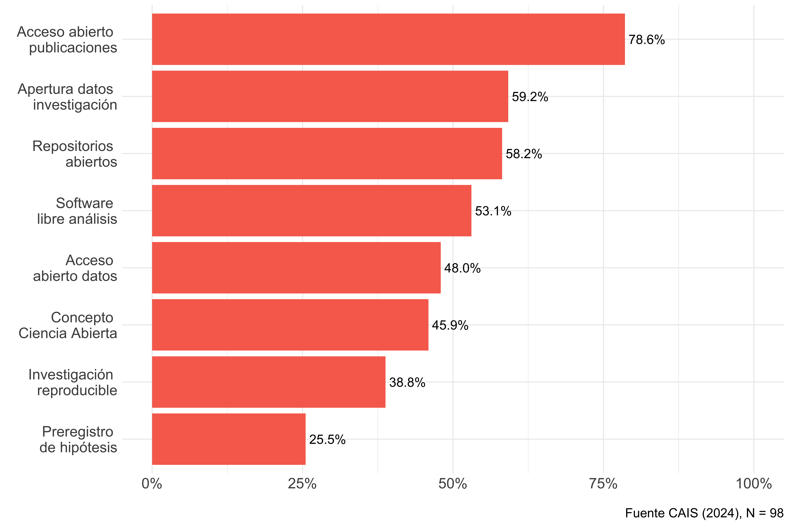
En general, los niveles de conocimiento parecen ser mayores entre investigadores jóvenes y con enfoque predominantemente cuantitativo, como se expone en la Figura 2. Los encuestados entre 28 y 34 años, así, muestran mayores niveles de conocimiento sobre softwares libres, y los conceptos de investigación reproducible y ciencia abierta (Figura 2 (a)). Con todo, los investigadores entre 35 y 49 años muestran mayores niveles de conocimiento de los preregistro de hipótesis y del acceso abierto a datos. Los investigadores cuantitativos, en tanto, presentan mayores niveles de conocimiento de todos los conceptos, salvo en el acceso abierto a publicaciones (Figura 2 (b)).
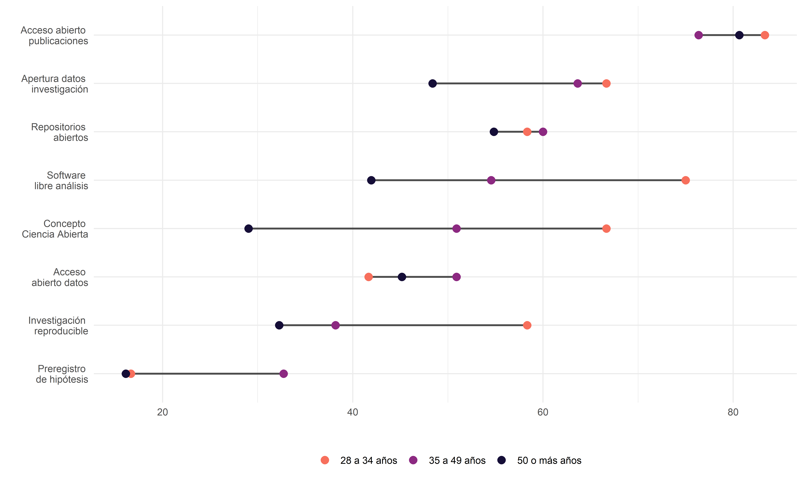
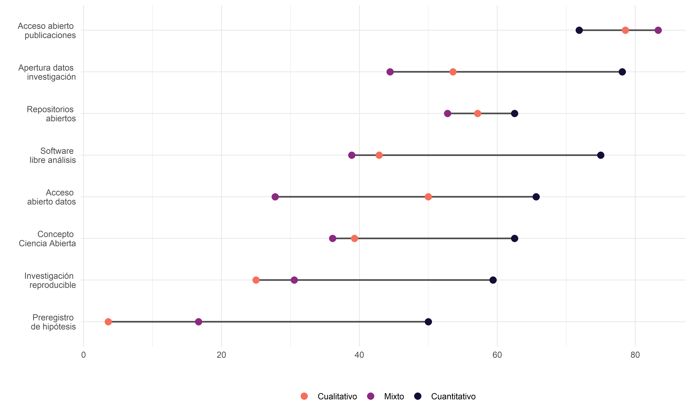
En la misma línea, La Política de Acceso Abierto a la Información Científica y a Datos de Investigación muestra niveles de conocimiento de intermedios a bajo. En concreto, solo la mitad de los encuestado han escuchado hablar sobre la política de acceso abierto de la ANID. Por otro lado, solo un 26% conoce el plan de gestión de datos de la política de acceso abierto de la ANID.
Prácticas
- Práctica propias y prácticas de la comunidad
En general, se observa una baja frecuencia de prácticas relacionadas con la ciencia abierta, como se aprecia en Figura 3. Un 32% de los encuestados siempre o casi siempre utiliza repositorios en línea para subir información relacionada a sus investigaciones, y un 16% declara compartir códigos entre investigadores (Figura 3 (b)). Este tipo de prácticas son más comunes entre investigadores hombres, aquellos cuyo enfoque predominante es cuantitativo, y quienes están en una etapa inicial de su carrera académica.
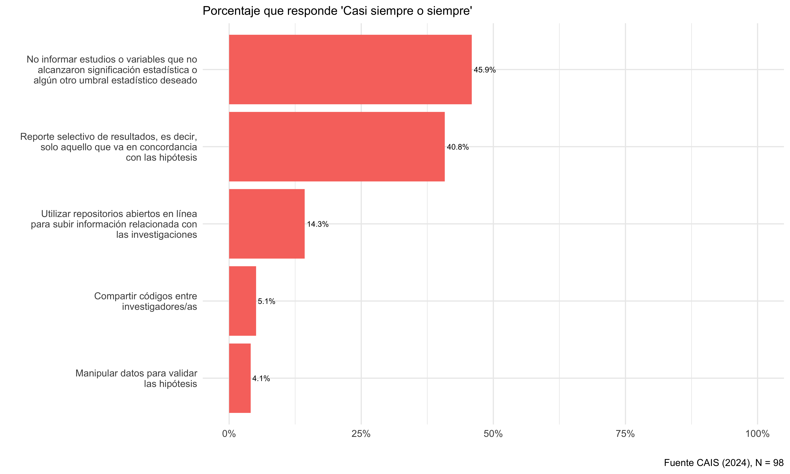
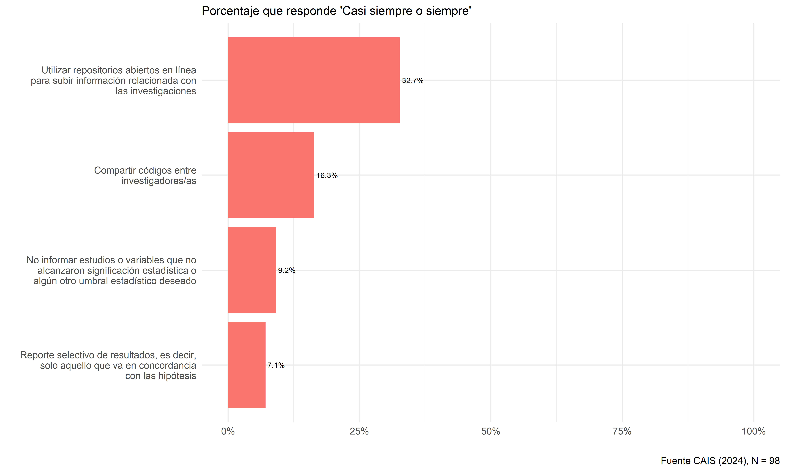
Es interesante que, en general, los investigadores declaran mejores prácticas propias que las percibidas en la comunidad. De tal modo, sólo un 14% cree que siempre o casi siempre la comunidad utiliza repositorios en línea para subir información relacionada a sus investigaciones, y un 5% cree que los investigadores comparten códigos con esa frecuencia (Figura 3 (a)).
Esta brecha es cierta también en lo relativo a las malas prácticas. Un 9% de los encuestados declara que casi siempre o siempre no informa estudios o variables que no alcanzaron significación estadística, mientras que un 45% percibe esta práctica como frecuente en la comunidad. Por otro lado, mientras un 7% declara reportar selectivamente resultados, el 40% cree que esto ocurre siempre o casi siempre entre la comunidad. Finalmente, mientras nadie reconoce manipular datos para validar una hipótesis, el 4% afirma que esto ocurre siempre o casi siempre en la comunidad.
Es curioso que al desagregar el análisis en distintos grupos, se repiten ciertas tendencias: Los investigadores hombres, de enfoque cuantitativo y de carrera inicial son, al mismo tiempo, quienes reconocen mayor frecuencia de prácticas propias, tanto negativas como positivas, como quienes perciben la mayor cantidad de prácticas negativas en la comunidad. Estas diferencias se pueden ver en detalle en Figura 4
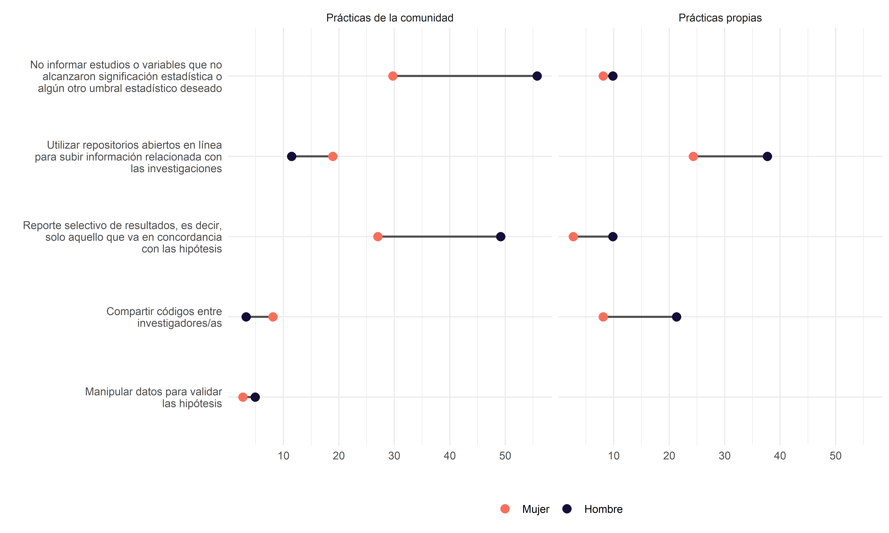
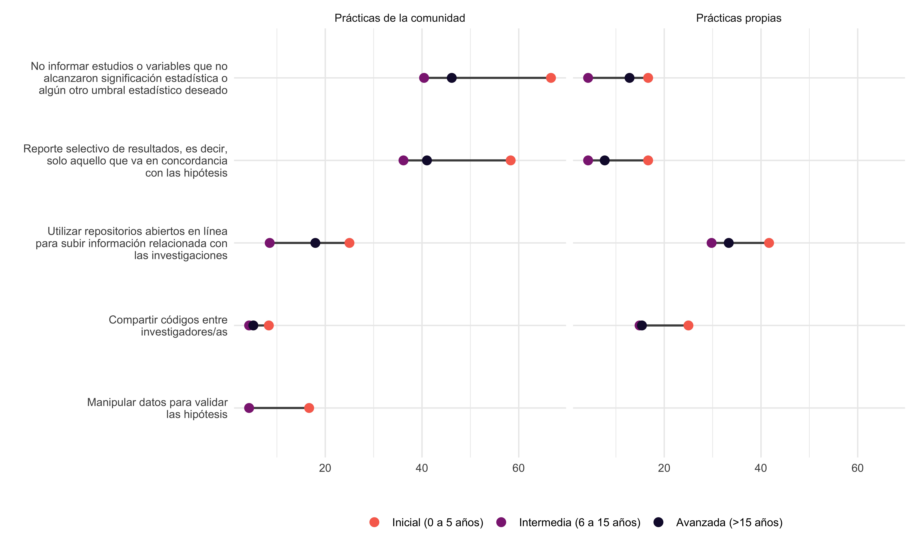
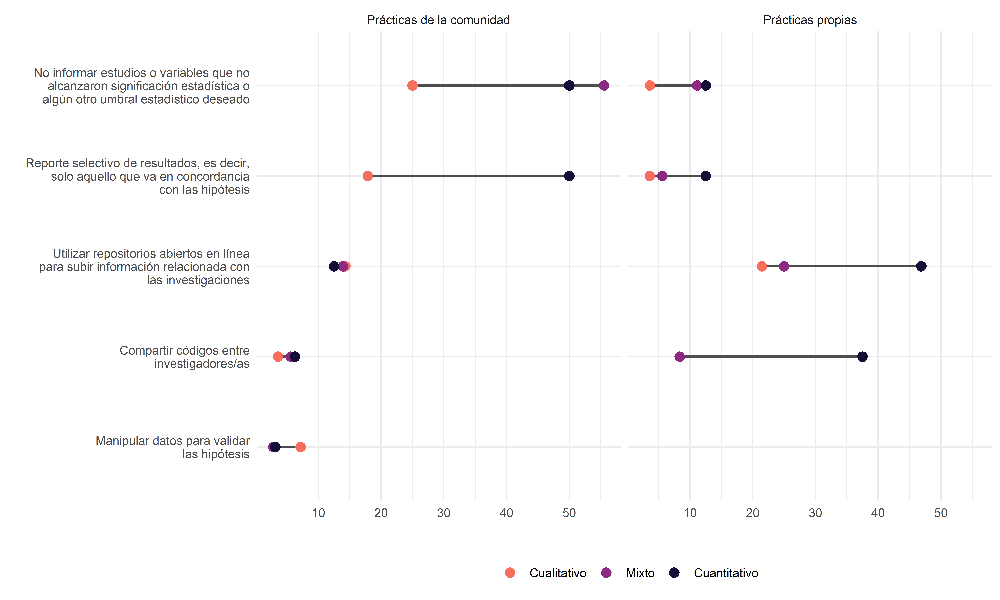
- Barreras para la Ciencia Abierta
Por otro lado, se observa una alta percepción de barreras para el desarrollo de la ciencia abierta en todas sus dimensiones. La Falta de políticas es reconocida como la principal barrera en todas las dimensiones, como se puede apreciar en la Figura 5. La falta de conocimientos también aparece como una barrera importante, particularmente para el diseño transparente, la apertura de datos y la investigación reproducible. Por último, la falta de incentivos es reconocida como otro aspecto que dificultan la apertura de datos.
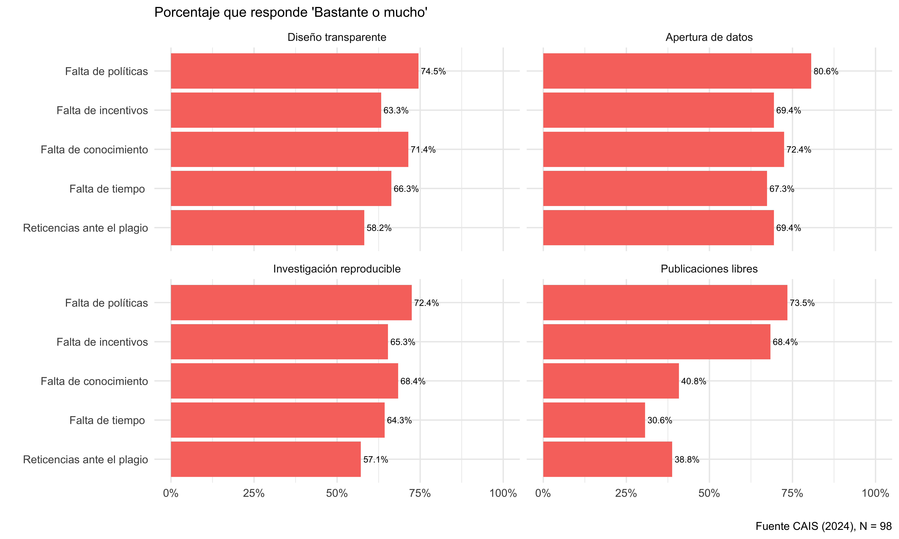
Respecto a este último punto, se abordaron los incentivos que podrían tener los investigadores para abrir sus datos. Como se aprecia en la Figura 6, tanto generar redes, como difundir a la comunidad datos financiados con recursos públicos y aumentar la visibilidad propia son altamente valoradas como incentivos para la apertura de datos.
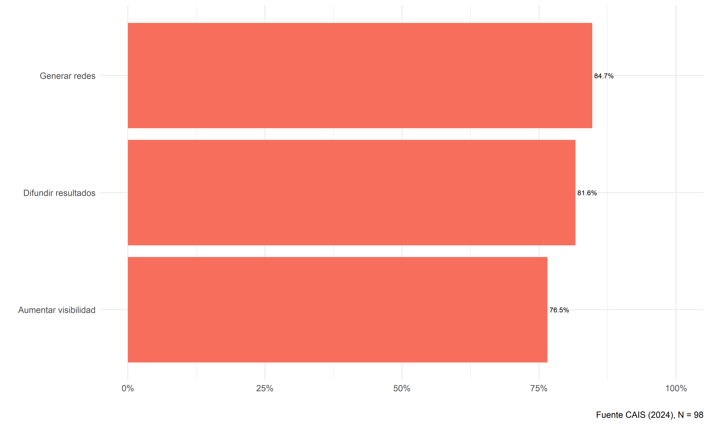
Es interesante constatar que, como se ve en la Figura 7, difundir resultados es valorado transversalmente, hay grupos donde la valoración de motivaciones “egoístas” (siguiendo esta idea introducida en el estudio cualitativo) tienen una mayor preponderancia. Particularmente, el generar redes y aumentar la visibilidad son incentivos más valorados por mujeres (Figura 7 (a)) e investigadores de entre 35 y 49 años (Figura 7 (b)).
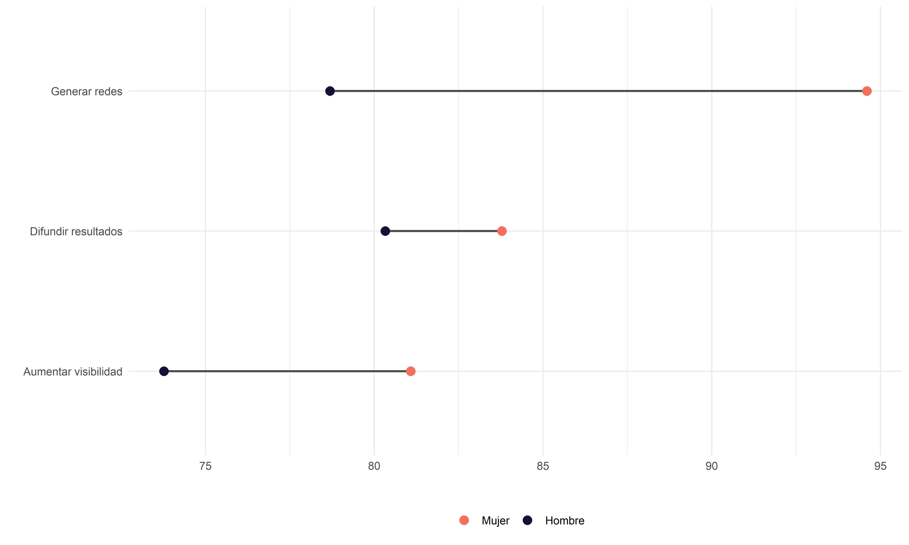
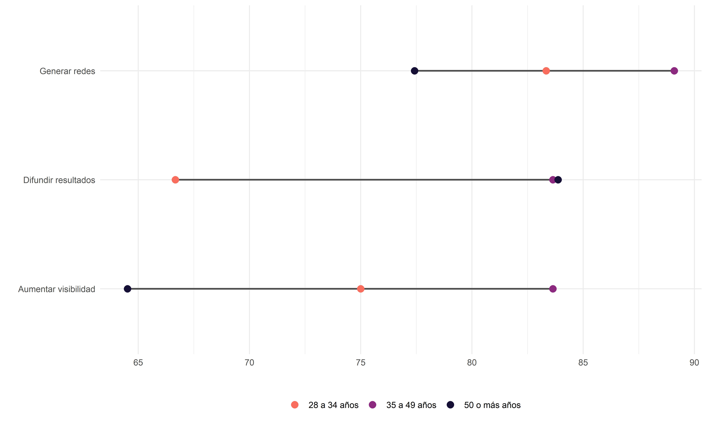
Valoraciones
- Valoraciones sobre medidas de Ciencia Abierta
En general, se valora positivamente la posibilidad de adoptar medidas de Ciencia Abierta en las Ciencias Sociales, como se puede observar en Figura 8 . El acceso abierto (92%), la replicación de hallazgos (67%), el reporte de resultados no estadísticamente significativos (76%), y la disponibilización en línea de datos y materiales de análisis (72%), todas muestran un alto nivel de aceptación entre los encuestados. La única excepción es el pre-registro de hipótesis, que solo tiene un 42% de evaluación positiva. Esto se explica por un mayor nivel de desconocimiento (17% dice no conocer la medida), además de las reticencias observadas tanto en las entrevistas del estudio cualitativo.
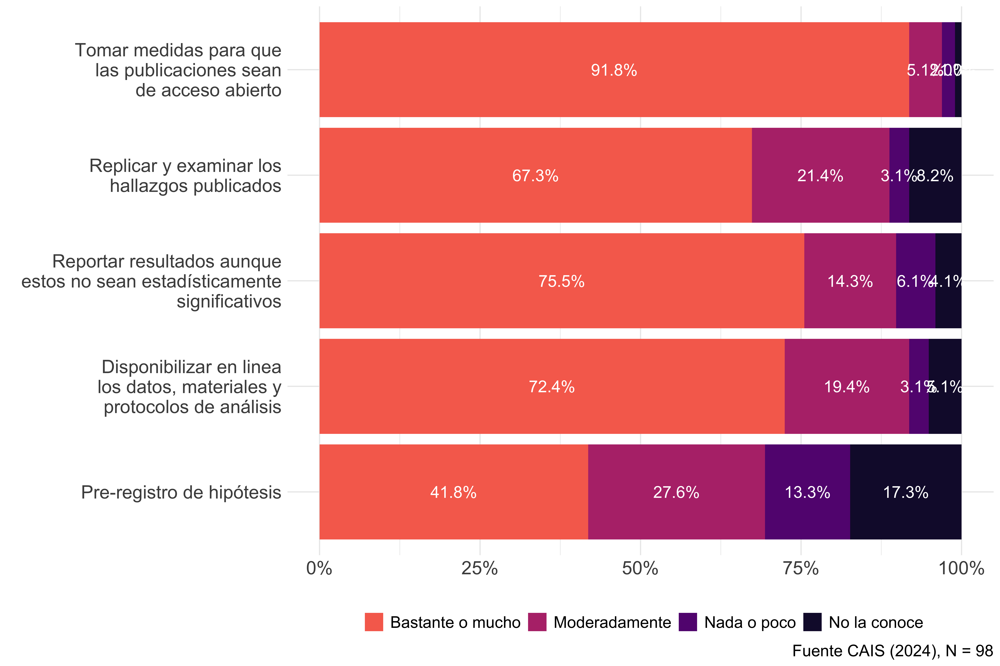
Salvo por el acceso abierto a publicaciones, que es valorada transversalmente por todos los grupos, estas medidas son apoyadas en mayor medida por investigadoras mujeres y por investigadores con enfoque cuantitativo.

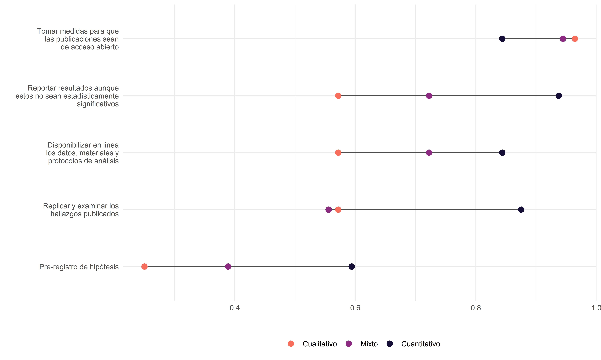
- Valoraciones sobre la Crisis de Reproducibilidad
Como se evidencia en la Figura 10, el 39% de los encuestados cree que hay una crisis importante de reproducibilidad, mientras que el 40% no sabe si la hay.
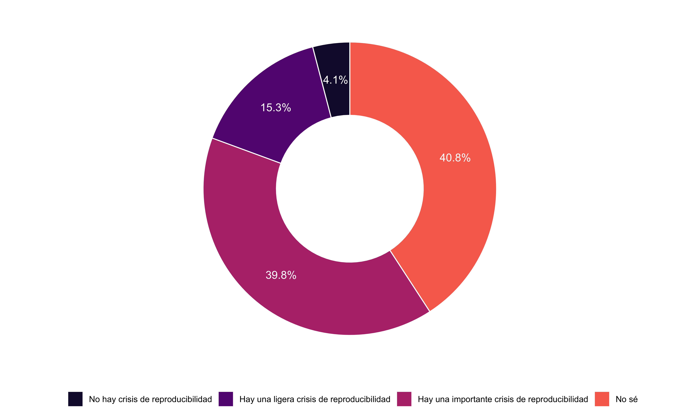
Además, se identificaron diferencias respecto al enfoque de investigación (ver Figura 11). La preocupación es mayor entre los investigadores cuantitativos, ya que el 70% cree que la crisis es importante. Si bien entre los investigadores cualitativos no se llega a negar la crisis, sí hay un 60% que desconoce si la hay o no.
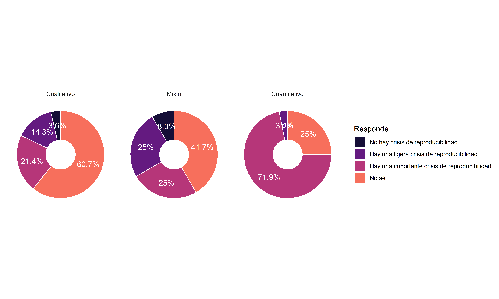
Por otro lado, el 59% cree que el 30% o menos de las investigaciones en ciencias sociales son reproducibles; el 83% cree que menos de la mitad de las investigaciones en ciencias sociales son reproducibles, como se muestra en Tabla 2.
| Respuesta | Frecuencia | Acum (%) |
|---|---|---|
| 0 | 1 | 1.02 |
| 10 | 16 | 17.35 |
| 20 | 13 | 30.61 |
| 30 | 23 | 54.08 |
| 40 | 3 | 57.14 |
| 50 | 25 | 82.65 |
| 60 | 4 | 86.73 |
| 70 | 4 | 90.82 |
| 80 | 4 | 94.90 |
| 90 | 5 | 100.00 |
Esto va en línea con que el 40% de los encuestados ha intentado reproducir resultados de otros investigadores (Figura 12 (a)). De este porcentaje, solo el 20% de los intentos han logrado una reproducción completa, mientras que el 69% ha logrado reproducciones parciales (Figura 12 (b)).
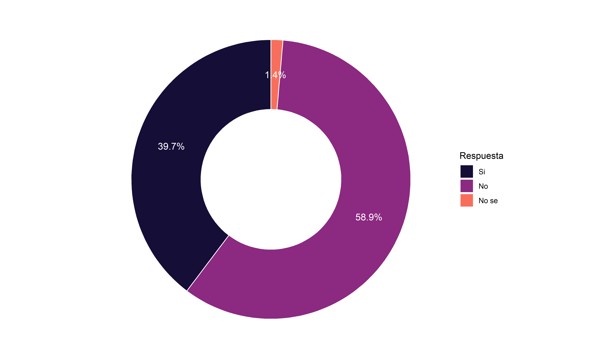
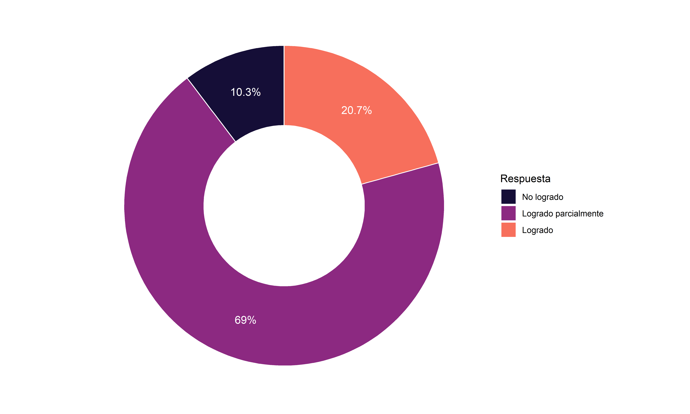
- Valoraciones Política de Ciencia Abierta de la ANID
En primera instancia, la Política de Ciencia Abierta de la ANID encuentra buena acogida entre los encuestados. Así, el 90% considera que está de acuerdo o muy de acuerdo con que la ANID continúe desarrollando políticas de ciencia abierta, como se muestra en Figura 14 (b). Asimismo, el 84% considera bastante o muy necesario la implementación de políticas de acceso abierto, como se observa en Figura 13 (a).
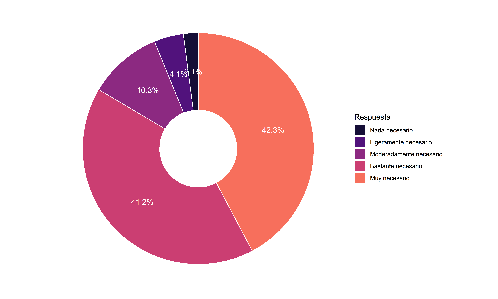
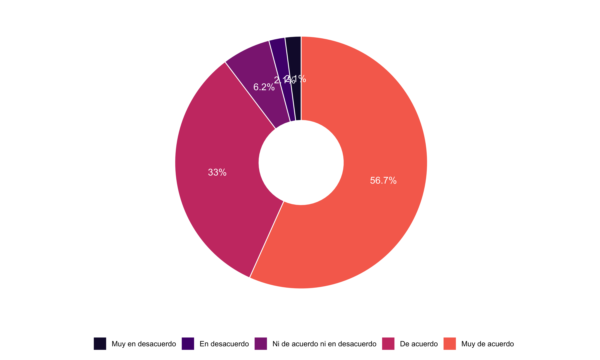
Sin embargo, hay otras prácticas que encuentran una menor acogida. Así, tanto la obligatoriedad del prerregistro, como se muestra en Figura 14 (a), como la de la reproducibilidad, como se observa en Figura 14 (b), obtienen el apoyo del 50% de los encuestados.
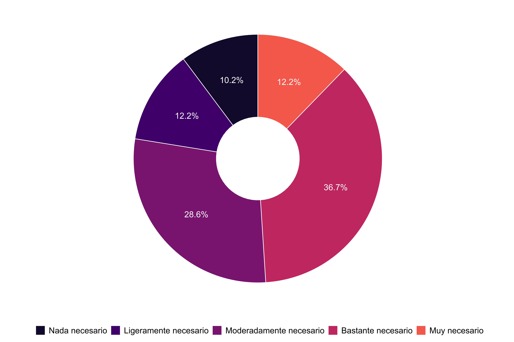
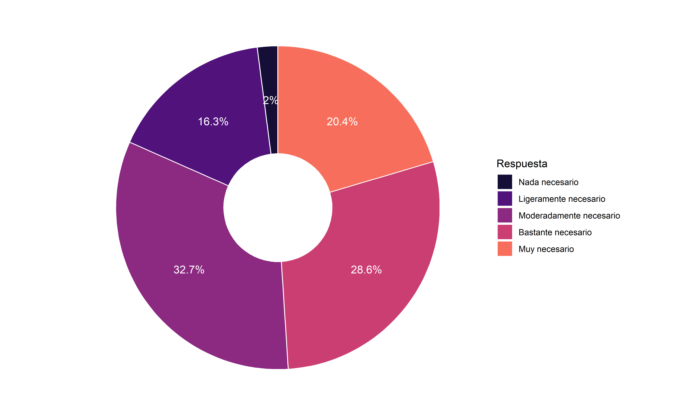
Por último, la política de difusión de la ANID es evaluada negativamente por la mayoría de los encuestados. Solo un 24% considera que esta política es buena o muy buena, como se observa en Figura 15.